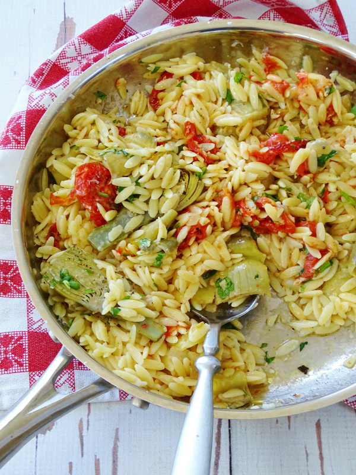

Recipe Book
Artichoke Pasta Salad
a mix of veggies, pasta, and goat cheese, with italian dressing
ingredients
steps
- cook the pasta according to instructions on the box
- dice cucumber
- add everything except cheese and dressing to a bowl
- mix contents of bowl
- divide into portions (if made multiple)
- sprinkle on cheese and drizzle italian dressing on top
- enjoy
